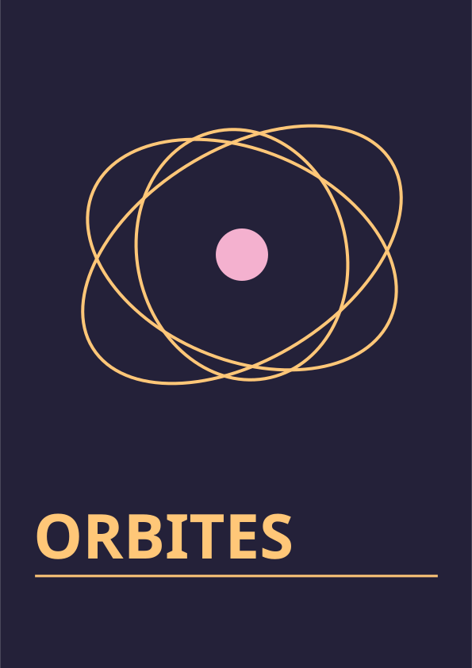
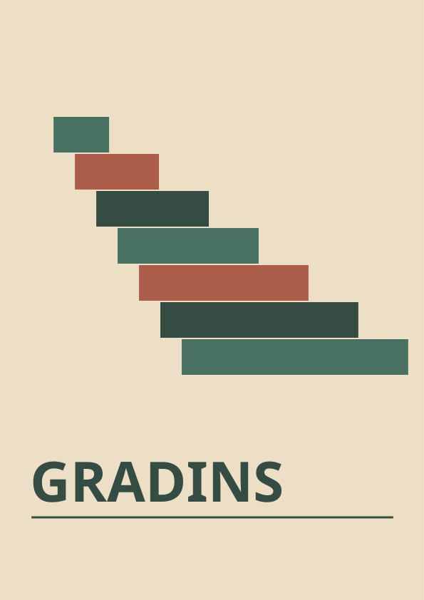

Orbites
Trois trajectoires se rencontrent sur un fond nocturne.
Trois compositions vectorielles à explorer, télécharger ou imprimer au format A4.

Trois trajectoires se rencontrent sur un fond nocturne.

Sept marches composent une montagne de papier.
Une série de courbes trace le mouvement de l’eau.